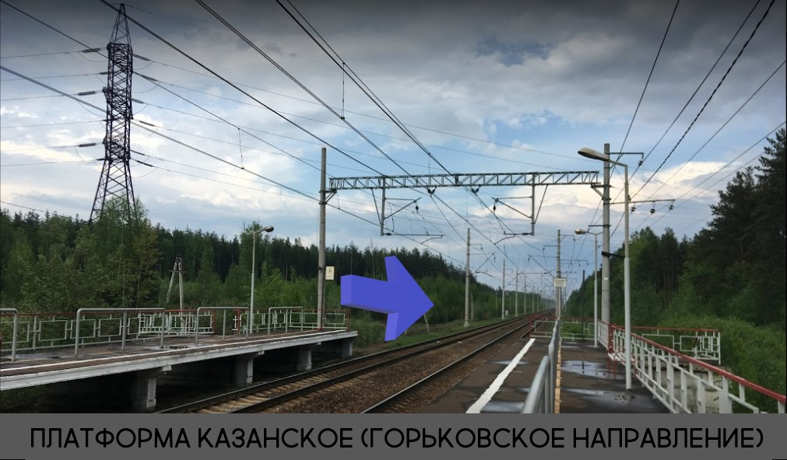

Местоположение
Лесная сцена "Полураспад Мироздания"
Леса села Казанское. Рядом с ж/д станцией "Казанское".
Координаты для GPS будут сообщены при покупке билета.

Леса села Казанское. Рядом с ж/д станцией "Казанское".
Координаты для GPS будут сообщены при покупке билета.